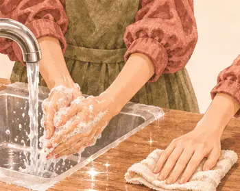
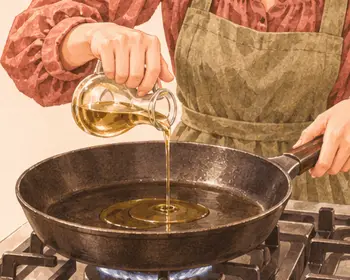
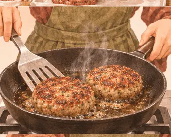
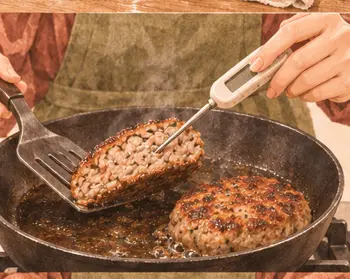
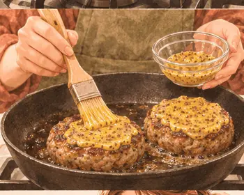
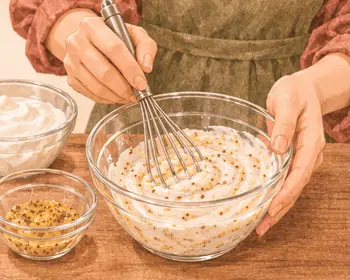
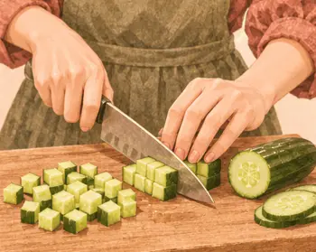

عشاء ما بعد التمرين · بعد النادي
أقراص لحم بالخردل وسلطة مكرونة
٤٩٠ سعرة للحصة١٨–٢٤ دقيقة
بروتين٤٢ غ
كربوهيدرات٤٩ غ
دهون١٣ غ
ألياف٣.٣ غ
كالسيوم١٣٤ ملغ
حديد٥.٧ ملغ
بوتاسيوم٨١٤ ملغ
فيتامين ج٣ ملغ
القيم الغذائية تقديرية للحصة الواحدة.

مكوّناتك
الوزن بالجرام · حدّد ما جهّزته
| المكوّن | حصة | ٣ حصص | ٤ حصص |
|---|---|---|---|
| ١٤٥ | ٤٣٥ | ٥٨٠ | |
| ١٣٥ | ٤٠٥ | ٥٤٠ | |
| ٨٠ | ٢٤٠ | ٣٢٠ | |
| ١٢ | ٣٦ | ٤٨ | |
| ٥٠ | ١٥٠ | ٢٠٠ | |
| ٣ | ٩ | ١٢ |
الأدوات · مقلاة، وعاء، ميزان حرارة
خطوة صغيرة، وطبق لذيذ
يلا، نطبخها معًا.
خذ وقتك، واتبع الصور على راحتك.
الخطوة٠١
شكّل قرصين بسمك ١.٥ سم.

الخطوة٠٢
اغسل يديك وسطح العمل.

الخطوة٠٣
سخّن الزيت على نار متوسطة.

الخطوة٠٤
اطبخ الأقراص ٥–٦ دقائق لكل جهة.

الخطوة٠٥
افحص مركز كل قرص من الجانب. أكمل الطهي حتى ٧١°م.

الخطوة٠٦
ادهن الأقراص بنصف الخردل.

الخطوة٠٧
اخلط البقية بالزبادي.

الخطوة٠٨
قطّع الخيار مكعبات.
الخطوة٠٩
قلّبه مع المكرونة الباردة والصوص وقدّمه بجانب اللحم.